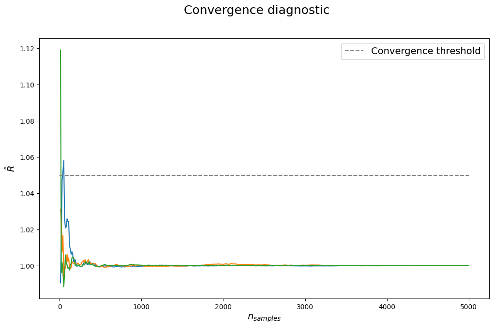

A Quick Tutorial#
In this example, we sample a truncated Gaussian distribution centered at the origin and restricted to a simplex. To reduce the amount of required code, we rely on hopsy.setup() to heuristically set sensible defaults for us. The simplex inequality is given as
\[\begin{split}Ax = \begin{pmatrix}
1 & 1 & \cdots & 1 \\
-1 & 0 & \cdots & 0 \\
0 & -1 & \cdots & 0 \\
\vdots & \vdots & \cdots & \vdots \\
0 & 0 & \cdots & -1
\end{pmatrix} \begin{pmatrix}
x_1 \\
\vdots \\
x_n
\end{pmatrix} \leq \begin{pmatrix}
1 \\
0 \\
\vdots \\
0
\end{pmatrix} = b,\end{split}\]
with \(A \in \mathbb{R}^{m \times n}\), \(x \in \mathbb{R}^n\) and \(b \in \mathbb{R}^m\). Since the Gaussian distribution is included in hopsy as a model, we do not have to worry further about it for the following example.
[1]:
import hopsy
import matplotlib.pyplot as plt
import numpy as np
# set up the polytope inequality for a 3-dimensional simplex
A, b = [[1, 1, 1], [-1, 0, 0], [0, -1, 0], [0, 0, -1]], [1, 0, 0, 0]
# create a 3-dimensional gaussian model centered at the origin
model = hopsy.Gaussian(mean=[0.5, 0.25, 0], covariance=0.01*np.identity(3))
# set up the problem
problem = hopsy.Problem(A, b, model)
# hopsy.setup creates markov chains with a herustic selection of proposal algorithm and tunes the acceptance rate of the chains, if the chains have the step size parameter.
# For the case of a Gaussian on the polytope, the TruncatedGaussianProposal is the best algorithm and it is automatically selected.
random_seed = 511
n_chains = 4 # Not required, will use number of available cpu cores otherwise
chains, rngs = hopsy.setup(problem, random_seed=random_seed, n_chains=n_chains)
# Below we run hopsy.setup again but overwrite the default proposal selection and use markov chain tuning
# and now for the fun!
n_samples = 5000
accrate, states = hopsy.sample(chains, rngs, n_samples=n_samples, thinning=10)
# when doing mcmc, assessing convergence is very important!
rhat = hopsy.rhat(states, series=10)
print('Acceptance rates (per chain):', *accrate)
ess = hopsy.ess(states)
print('Ess (for all chains):', hopsy.ess(states))
print('Ess per chain (100+ is usually good enough):', ess/len(chains))
fig, ax = plt.subplots(1, 1, figsize=(12,7))
plt.suptitle("Convergence diagnostic", fontsize=18)
ax.plot(range(10, n_samples+10, 10), rhat)
# The convergence threshold depends on how strict the sample quality is evaluated. Typical values are 1.1, 1.05, 1.02 and 1.01.
ax.plot([0, n_samples], [1.05, 1.05], linestyle='dashed', color='gray',
label='Convergence threshold')
ax.set_xlabel(r"$n_{samples}$", fontsize=14)
ax.set_ylabel(r"$\hat{R}$", fontsize=14)
ax.legend(fontsize=14)
n_dims = 3
n_cols = 3
n_rows = 1
plt.figure(figsize=(n_cols * 4, n_rows * 4))
plt.subplot(n_rows, n_cols, 1)
plt.suptitle("Marginal densities", fontsize=18)
for dim in range(n_dims):
plt.subplot(n_rows, n_cols, dim + 1)
plt.title(f"dimension {dim}", fontsize=14)
chain_index = 0
_, bins, _ = plt.hist(
states[chain_index,:,dim],
bins=50,
density=True,
label=f"chain {chain_index}" if dim == 0 else None,
alpha=0.75,
color="C0")
for chain_index in range(1, n_chains):
_ = plt.hist(
states[chain_index,:,dim],
bins=bins,
alpha=0.5,
density=True,
label=f"chain {chain_index}" if dim == 0 else None,
color=f"C{chain_index}",
)
plt.ylabel('density', fontsize=12)
plt.xlabel('value', fontsize=12)
plt.figlegend(fontsize=12, loc='lower right')
plt.tight_layout()
plt.show()
Set parameter Username
Academic license - for non-commercial use only - expires 2025-03-22
Acceptance rates (per chain): 1.0 1.0 1.0 1.0
Ess (for all chains): [[19990.02206217 19463.9249551 18939.15180953]]
Ess per chain (100+ is usually good enough): [[4997.50551554 4865.98123877 4734.78795238]]

[ ]: